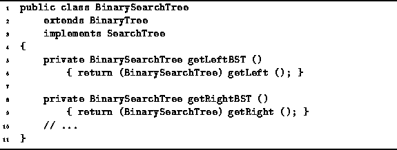

Data Structures and Algorithms
with Object-Oriented Design Patterns in Java
Data Structures and Algorithms
with Object-Oriented Design Patterns in JavaThe BinarySearchTree class inherits the three fields key, left, and right from the BinaryTree class. The first refers to any Object instance, and the latter two are BinaryTree instances which are the subtrees of the given tree. All three fields are null if the node represents the empty tree. Otherwise, the tree must have a root and two subtrees. Therefore, all three fields are non-null in an internal node.
Program  defines the two methods
getLeftBST and getRightBST
which return the left and right subtrees,
respectively, of a given binary search tree.
In the BinaryTree class
the left and right fields are BinaryTrees.
However, in a binary search tree,
the subtrees will be instances of the BinarySearchTree class.
The getLeftBST and getRightBST methods cast the left
and right fields to the appropriate type.
defines the two methods
getLeftBST and getRightBST
which return the left and right subtrees,
respectively, of a given binary search tree.
In the BinaryTree class
the left and right fields are BinaryTrees.
However, in a binary search tree,
the subtrees will be instances of the BinarySearchTree class.
The getLeftBST and getRightBST methods cast the left
and right fields to the appropriate type.

Program: BinarySearchTree class getLeftBST and getRightBST methods.
 Copyright © 1998 by Bruno R. Preiss, P.Eng. All rights reserved.
Copyright © 1998 by Bruno R. Preiss, P.Eng. All rights reserved.